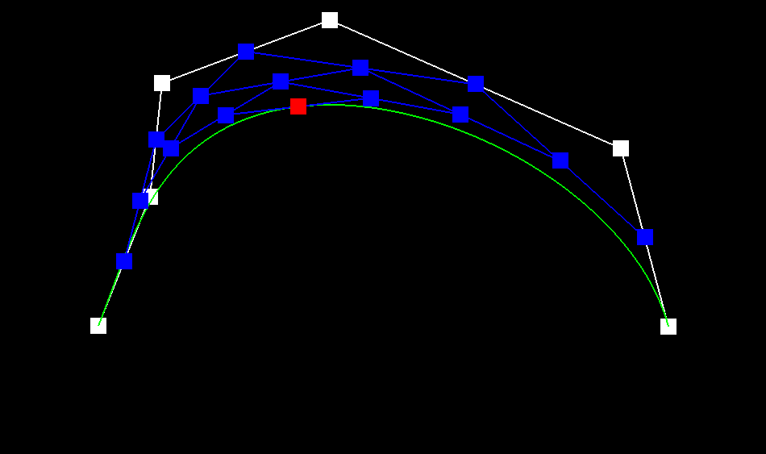
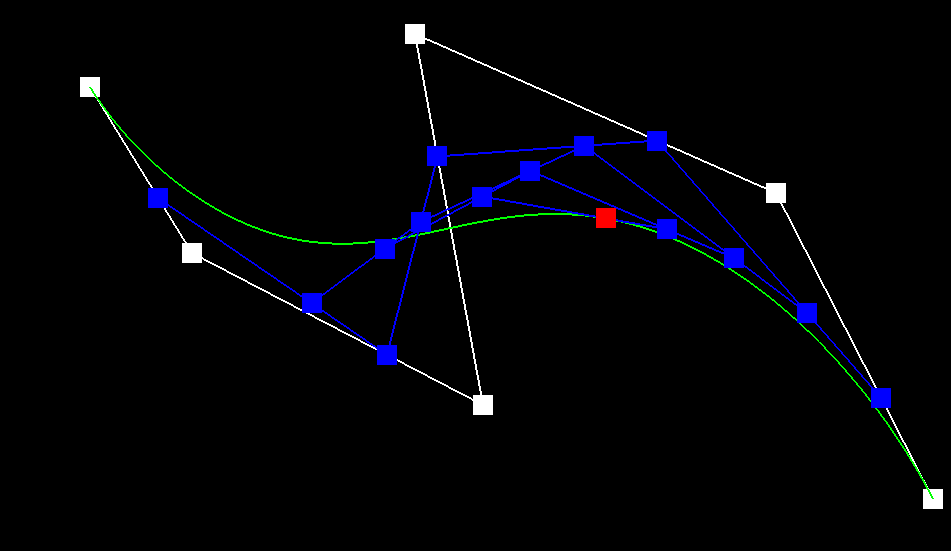
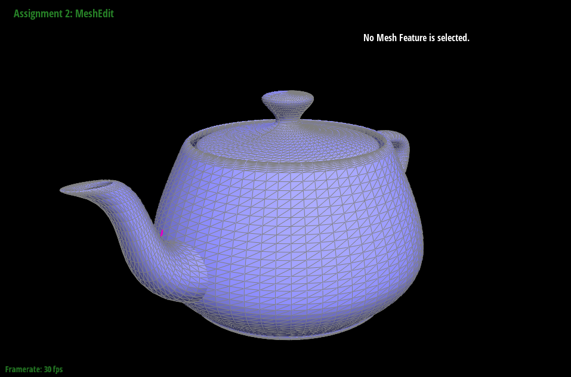
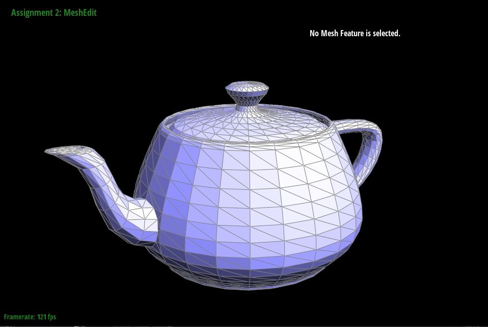
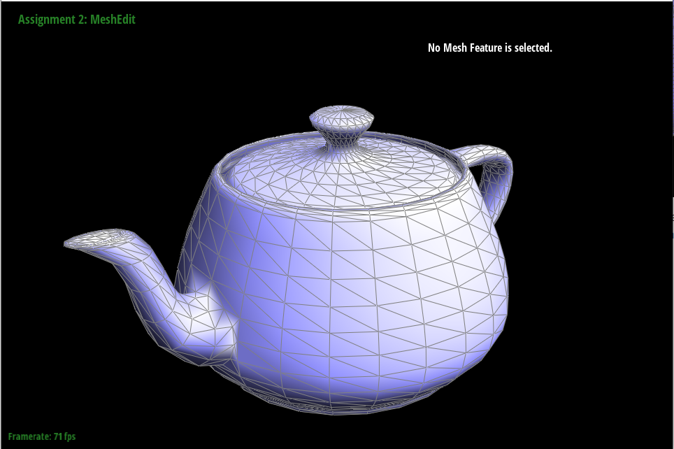

by Albert Wen
For this section of the project, I implemented de Casteljau’s algorithm to perform subdivisions for two dimensional points in BezierCurve::evaluateStep() in studentCode.cpp. For some vector<Vector2D> containing control points, there are intermediate points after one step in the algorithm. A parameter is a scalar parameter used in the linear interpolation. The following equation denotes the computation for points at the first subdivision level containing points :
The output of the evaluateStep function contained a vector of intermediate points. The base case of the recursion dictated that if the input vector contained only one point, then the function returned an empty vector<Vector2D>. For larger input vectors containing more control points of the Bezier Curve, the function interpolated between the first two points on the vector and then called BezierCurve::evaluateStep() with an input containing points after the zeroth entry of the input.
In Figure 1, the Bezier curve (illustrated in green) is constructed after three levels of de Casteljau’s algorithm. Figure 2 displays a different curve after the control points (in white) are rearranged and the parameter is increased.
|  |
|  |
De Casteljau’s algorithm can be extended from Bezier curves to Bezier surfaces through parameterization. For 2D vector std::vector<std::vector<Vector3D>> controlPoints, which is a grid of control points in 3D space, de Casteljau’s algorithm is first applied along row-wise to find a parameterized Bezier curve for all rows. The curves of are further interpolated to find a singular point associated with each row of points in controlPoints
|  |
To find the area-weighted vertex normal of a triangle, I utilized the halfedge associated with a given vertex to go to the next two vertices of the triangle. With the vertices of the triangle, I constructed two Vector3D objects and computed their cross product, which is a vector normal to the face of the triangle. Then I used .unit() to normalize the cross product.
|  |
|  |
I created pointers for all objects within a two-triangle mesh first, and then reassigned them accordingly. I did not used setNeighbors for Halfedge objects.